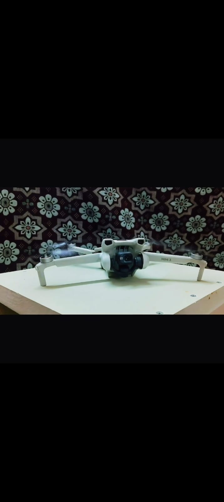

DJI Mini 3
Compact sub-250g drone for aerial photography, travel content and creative flying.
DJI Mini 3
The DJI Mini 3 is a compact lightweight drone designed for aerial photography, travel content and creative flying.
Its lightweight design, vertical shooting capability and long flight-time options make it suitable for everyday aerial content creation.
⚙️ Key Specs
Weight
248g
Camera
1/1.3-inch CMOS
Aperture
f/1.7
Photo
12MP
Video
4K up to 30fps
Flight Time
Up to 38 min standard
Wind Resistance
10.7 m/s
Transmission
DJI O2
🚁 Features
- True Vertical Shooting
- HDR support
- Compact lightweight design
- Suitable for travel photography
- Suitable for aerial videos
- Creative content and social media shooting
📌 Compared with Mini 3 Pro
- No forward, side or rear obstacle sensing
- No 48MP photo output
- Uses DJI O2 transmission